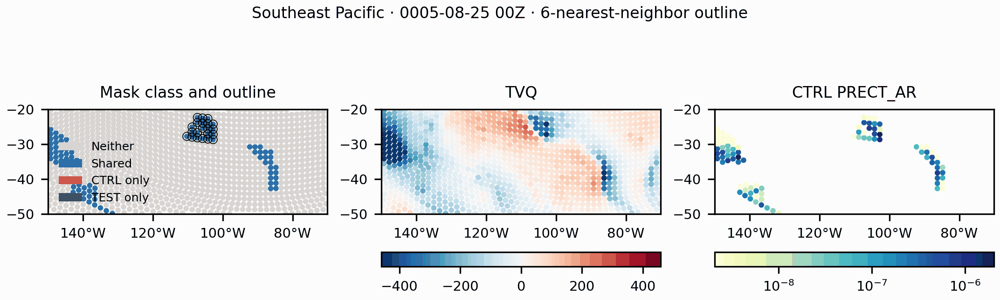

Energy Exascale Earth System Model
Home
Figures
Movies
Resources
Southeast Pacific case study
North Pacific
North Atlantic
Southeast Pacific
South Atlantic
M07 Southeast Pacific case study

Animated Southeast Pacific case study with mask class and outline, TVQ, and CTRL PRECT_AR.